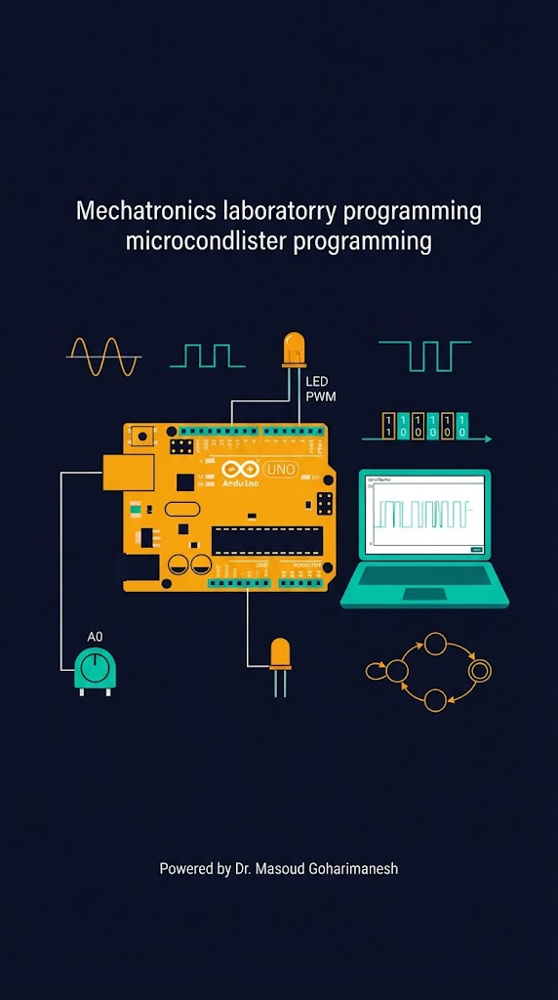
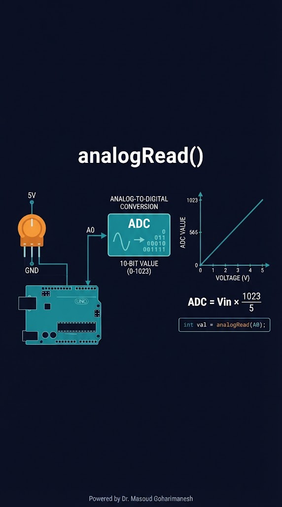
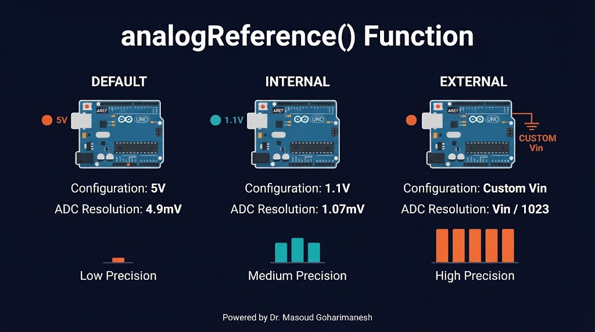
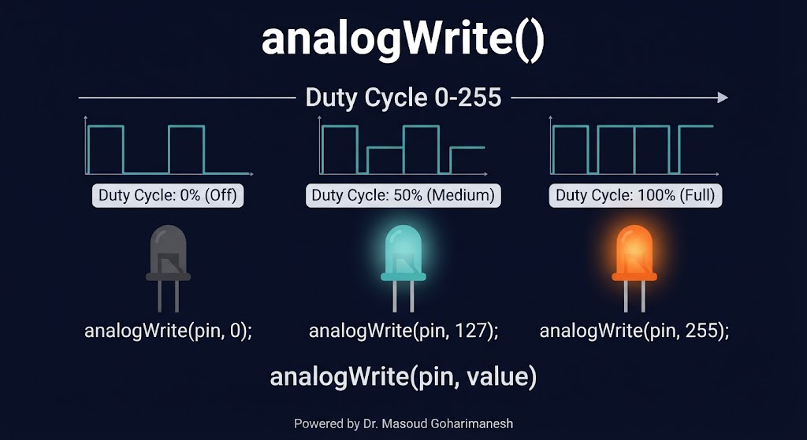
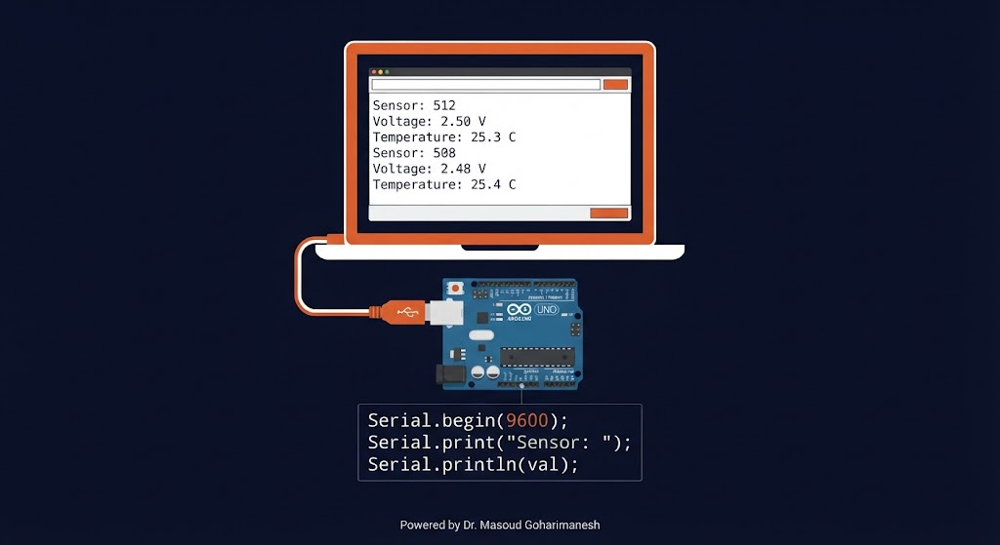
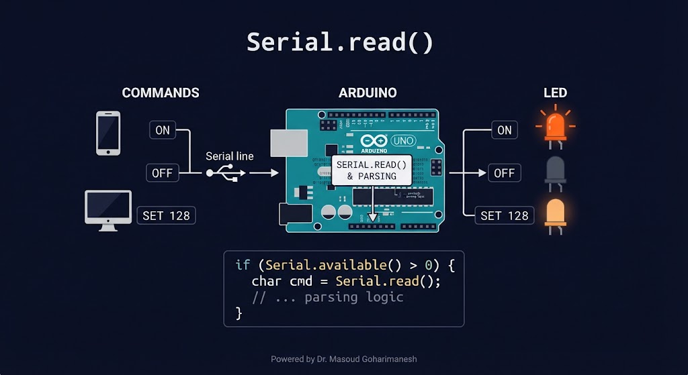
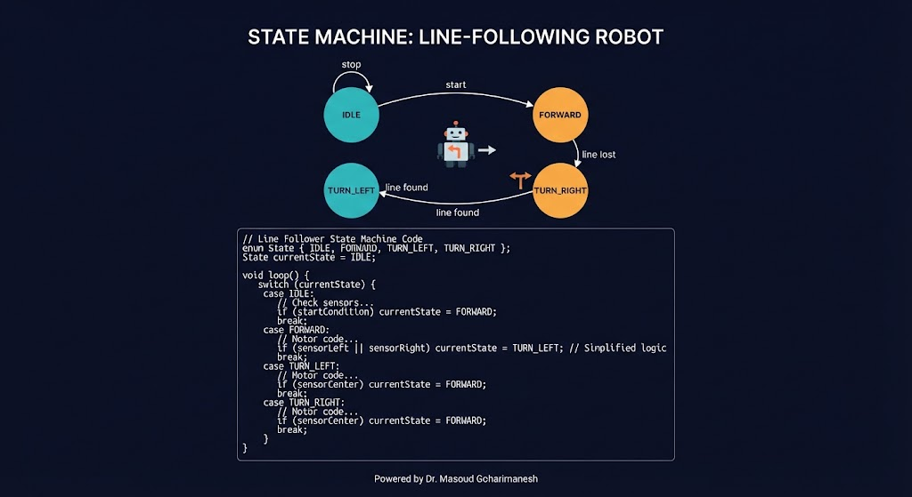

بخش دوم: آنالوگ، سریال، ماشین حالت
دکتر مسعود گوهریمنش
دانشیار گروه مهندسی مکانیک
دانشگاه تربت حیدریه | پاییز ۱۴۰۵
با ترکیب آنالوگ، سریال و ماشین حالت، میتوان یک ربات کامل ساخت!
چگونه میتوان با ارسال یک دستور از کامپیوتر، یک LED را با شدتهای مختلف کنترل کرد؟
تبدیل ولتاژ به عدد

Vref: ولتاژ مرجع (پیشفرض ۵V) | خروجی: ۰ تا ۱۰۲۳ (۱۰ بیت)
void loop() {
int raw = analogRead(A0);
float voltage = raw * (5.0 / 1023.0);
Serial.print("Raw: ");
Serial.print(raw);
Serial.print(" | V: ");
Serial.println(voltage, 3);
}
افزایش دقت اندازهگیری

void setup() {
analogReference(INTERNAL); // 1.1V مرجع
Serial.begin(9600);
}
void loop() {
int raw = analogRead(A0);
float voltage = raw * (1.1 / 1023.0);
// دقت بالاتر برای سیگنالهای کوچک
}
شبیهسازی خروجی آنالوگ

value: ۰ تا ۲۵۵ (۸ بیت) | V_supply: ۵V (معمولاً)
#define LED_PIN 9 // PWM
void loop() {
for (int brightness = 0; brightness <= 255; brightness += 5) {
analogWrite(LED_PIN, brightness);
delay(30);
}
for (int brightness = 255; brightness >= 0; brightness -= 5) {
analogWrite(LED_PIN, brightness);
delay(30);
}
}
از LED تا موتور
کنترل روشنایی — از خاموش تا کامل
کنترل دور موتور DC — با L298N
کنترل موقعیت — با پالس ۱-۲ms
نکته: آردینو UNO دارای ۶ پین PWM: ۳، ۵، ۶، ۹، ۱۰، ۱۱ — روی برد با علامت ~ مشخص شدهاند.
ارتباط با کامپیوتر و ماژولها
Baud Rate: معمولاً ۹۶۰۰ یا ۱۱۵۲۰۰ — باید در Serial Monitor هم تنظیم شود.
نمایش دادهها در Serial Monitor

void setup() {
Serial.begin(9600);
}
void loop() {
int sensor = analogRead(A0);
float temp = sensor * 0.488;
Serial.print("Sensor: ");
Serial.print(sensor);
Serial.print(" | Temp: ");
Serial.print(temp);
Serial.println(" C");
delay(500);
}
کنترل با دستورات

void setup() {
Serial.begin(9600);
pinMode(LED_BUILTIN, OUTPUT);
}
void loop() {
if (Serial.available() > 0) {
char cmd = Serial.read();
if (cmd == 'H') {
digitalWrite(LED_BUILTIN, HIGH);
Serial.println("LED ON");
} else if (cmd == 'L') {
digitalWrite(LED_BUILTIN, LOW);
Serial.println("LED OFF");
}
}
}
دستورات متنی برای کنترل
| دستور | عملکرد | مثال |
|---|---|---|
| LED ON | روشن کردن LED | Serial.println("LED ON"); |
| LED OFF | خاموش کردن LED | Serial.println("LED OFF"); |
| PWM x | تنظیم شدت | PWM 128 |
| STATUS | دریافت وضعیت | Serial.println(state); |
مدلسازی رفتار پیچیده

با switch-case
enum State { IDLE, RUNNING, PAUSED, ERROR };
State currentState = IDLE;
void loop() {
switch (currentState) {
case IDLE:
if (startButtonPressed()) {
currentState = RUNNING;
}
break;
case RUNNING:
runMotor();
if (stopButtonPressed()) {
currentState = PAUSED;
}
if (errorDetected()) {
currentState = ERROR;
}
break;
case PAUSED:
stopMotor();
if (startButtonPressed()) {
currentState = RUNNING;
}
break;
case ERROR:
stopMotor();
if (resetButtonPressed()) {
currentState = IDLE;
}
break;
}
}
چهار حالت اصلی
void loop() {
switch (state) {
case FOLLOWING:
if (sensorCenter()) {
moveForward();
} else if (sensorLeft()) {
turnLeft();
} else if (sensorRight()) {
turnRight();
} else {
state = SEARCHING;
}
break;
case SEARCHING:
spinInPlace();
if (sensorCenter() || sensorLeft() || sensorRight()) {
state = FOLLOWING;
}
break;
}
}
کنترل LED با سریال و ماشین حالت
LED (پین ۹)
دستورات را تایپ کنید و ببینید ماشین حالت چگونه رفتار میکند.
جلسه بیستویکم - برنامهنویسی (بخش دوم)
نکات کلیدی جلسه بیستویکم
جلسه بعد: طراحی و پیادهسازی سیستم کنترل (PID)
Powered by Dr. Masoud Goharimanesh